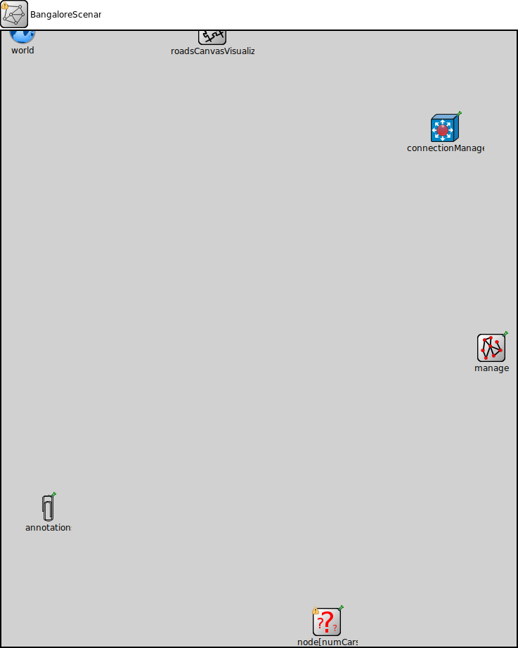

Package: bangalore_v2v.simulations.bangalore_simulation
BangaloreScenario
network(no description)
Usage diagram
The following diagram shows usage relationships between types. Unresolved types are missing from the diagram.
Parameters
| Name | Type | Default value | Description |
|---|---|---|---|
| playgroundSizeX | double |
Playground size parameters (will be overridden by TraCI based on SUMO map boundaries) |
|
| playgroundSizeY | double | ||
| playgroundSizeZ | double | ||
| numCars | int |
This parameter will be set by the TraCIScenarioManagerLaunchd to the number of vehicles in the SUMO route file. |
Properties
| Name | Value | Description |
|---|---|---|
| isNetwork | ||
| display | bgb=dropUnit($playgroundSizeX),dropUnit($playgroundSizeY) |
Comment out or remove the original line: @display("bgb=$playgroundSizeX,$playgroundSizeY"); Add this line as a workaround: |
Unassigned submodule parameters
| Name | Type | Default value | Description |
|---|---|---|---|
| manager.connectAt | double | 0s |
when to connect to TraCI server (must be the initial timestep of the server) |
| manager.firstStepAt | double | -1s |
when to start synchronizing with the TraCI server (-1: immediately after connecting) |
| manager.updateInterval | double | 1s |
time interval of hosts' position updates |
| manager.moduleType | string | "org.car2x.veins.nodes.Car" |
module type to be used in the simulation for each managed vehicle |
| manager.moduleName | string | "node" |
module name to be used in the simulation for each managed vehicle |
| manager.moduleDisplayString | string | "*='i=veins/node/car;is=vs'" |
module displayString to be used in the simulation for each managed vehicle display strings key-value pairs needs to be protected with single quotes, as they use an = sign as the type mappings. For example *.manager.moduleDisplayString = "'i=block/process'" *.manager.moduleDisplayString = "a='i=block/process' b='i=misc/sun'" moduleDisplayString can also be left empty: *.manager.moduleDisplayString = "" |
| manager.trafficLightModuleType | string | "" |
module type to be used in the simulation for each managed traffic light |
| manager.trafficLightModuleName | string | "tls" |
module name to be used in the simulation for each managed traffic light |
| manager.trafficLightFilter | string | "" |
filter string to select which tls shall be subscribed, list sumo IDs separated by spaces |
| manager.trafficLightModuleDisplayString | string | "i=veins/node/trafficlight;is=vs" |
module displayString to be used in the simulation for each managed traffic light |
| manager.host | string | "localhost" |
server hostname |
| manager.port | int | 9999 |
server port (-1: automatic) |
| manager.seed | int | -1 |
seed value to set in launch configuration, if missing (-1: current run number) |
| manager.autoShutdown | bool | true |
Shutdown module as soon as no more vehicles are in the simulation |
| manager.margin | int | 25 |
margin to add to all received vehicle positions |
| manager.roiRoads | string | "" |
which roads (e.g. "hwy1 hwy2") are considered to consitute the region of interest, if not empty |
| manager.roiRects | string | "" |
which rectangles (e.g. "0,0-10,10 20,20-30,30) are considered to consitute the region of interest, if not empty. Note that these rectangles have to use TraCI (SUMO) coordinates and not OMNeT++. They can be easily read from sumo-gui. |
| manager.penetrationRate | double | 1 |
the probability of a vehicle being equipped with Car2X technology |
| manager.ignoreGuiCommands | bool | false |
whether to ignore all TraCI commands that only make sense when the server has a graphical user interface |
| manager.order | int | -1 |
specific position in the multi-client execution order of the TraCI server to request upon connecting (-1: do not request a position) |
| manager.ignoreUnknownSubscriptionResults | bool | false |
whether to (try and) ignore any subscription result we did not request (but another client might have) |
| manager.launchConfig | xml |
launch configuration to send to sumo-launchd.py |
|
| world.useTorus | bool | false |
use the playground as torus? |
| world.use2D | bool | false |
use a 2-dimensional world? |
| annotations.draw | bool | false |
draw annotations? |
| annotations.annotations | xml | xml(" |
annotations to add at startup |
| roadsCanvasVisualizer.enabled | bool | true |
whether to enable any of the functionality of this module |
| roadsCanvasVisualizer.lineZIndex | double | -1 |
z-index of all lines |
| roadsCanvasVisualizer.lineColor | string | "firebrick4" |
line color of roads |
| roadsCanvasVisualizer.lineWidth | double | 1 |
line width of roads |
| roadsCanvasVisualizer.lineWidthZoom | bool | false |
whether zooming should affect line width |
| connectionManager.sendDirect | bool |
send directly to the node or create separate gates for every connection |
|
| connectionManager.maxInterfDist | double |
maximum interference distance [m] |
|
| connectionManager.drawMaxIntfDist | bool | false |
should the maximum interference distance be displayed for each node? |
| node.appl.headerLength | int |
length of the application message header (in bits) |
|
| node.veinsmobility.x | double |
x coordinate of the nodes' position (-1 = random) |
|
| node.veinsmobility.y | double |
y coordinate of the nodes' position (-1 = random) |
|
| node.veinsmobility.z | double |
z coordinate of the nodes' position (-1 = random) |
Source code
network BangaloreScenario { parameters: // Playground size parameters (will be overridden by TraCI based on SUMO map boundaries) // double playgroundSizeX @unit(m); // double playgroundSizeY @unit(m); // double playgroundSizeZ @unit(m); // @display("bgb=$playgroundSizeX,$playgroundSizeY"); // // Playground size parameters (will be overridden by TraCI based on SUMO map boundaries) double playgroundSizeX @unit(m); double playgroundSizeY @unit(m); double playgroundSizeZ @unit(m); // Comment out or remove the original line: // @display("bgb=$playgroundSizeX,$playgroundSizeY"); // Add this line as a workaround: @display("bgb=dropUnit($playgroundSizeX),dropUnit($playgroundSizeY)"); // <-- Use dimensionless numbers for background size // This parameter will be set by the TraCIScenarioManagerLaunchd // to the number of vehicles in the SUMO route file. int numCars; submodules: // The TraCI Scenario Manager module connects to SUMO and manages vehicles manager: TraCIScenarioManagerLaunchd { parameters: @display("p=697,451"); } world: BaseWorldUtility { parameters: playgroundSizeX = veins_eval_by_version(veins_omnetpp_buildnum(), "playgroundSizeX", 1525, "parent.playgroundSizeX"); playgroundSizeY = veins_eval_by_version(veins_omnetpp_buildnum(), "playgroundSizeY", 1525, "parent.playgroundSizeY"); playgroundSizeZ = veins_eval_by_version(veins_omnetpp_buildnum(), "playgroundSizeZ", 1525, "parent.playgroundSizeZ"); @display("p=30,0;i=misc/globe"); } // Obstacle module (include only if you are using obstacles) // obstacles: ObstacleControl { // parameters: // @display("p=42,90"); // } // Annotation manager (include only if you are using annotations) annotations: AnnotationManager { parameters: @display("p=66,679"); } roadsCanvasVisualizer: RoadsCanvasVisualizer { @display("p=300,0"); } connectionManager: ConnectionManager { parameters: @display("p=631,138"); // You might need to set 'maxInterfDist' here if not set in omnetpp.ini // maxInterfDist = default(2500m); // Example default value } // Declare the submodule vector for the vehicle nodes. // The size of this vector is determined by the numCars parameter. node[numCars]: Car { parameters: // Use a different approach to specify applType appl.typename = "bangalore_v2v.MyBangaloreApp.MyBangaloreApp"; // <-- Simplified to just the module name // Pass the broadcastInterval parameter to your application module appl.broadcastInterval = default(1s); // Example default value, can be overridden in omnetpp.ini @display("i=vehicle/passenger;p=463,841"); } connections allowunconnected: // Define connections between modules here if needed. // For V2V communication, connections are typically handled by the network interface cards (NICs) // and the connection manager, not explicitly listed here unless specific wired connections are involved. // 'allowunconnected' permits modules/gates to be unconnected. }File: simulations/bangalore_simulation/BangaloreScenario.ned
 This documentation is released under the Creative Commons license
This documentation is released under the Creative Commons license